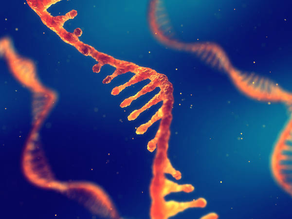
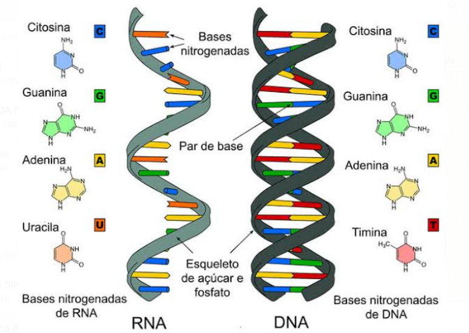
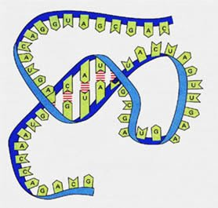
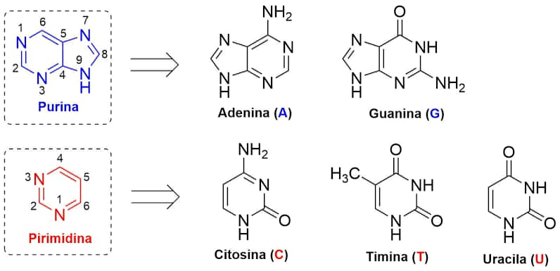
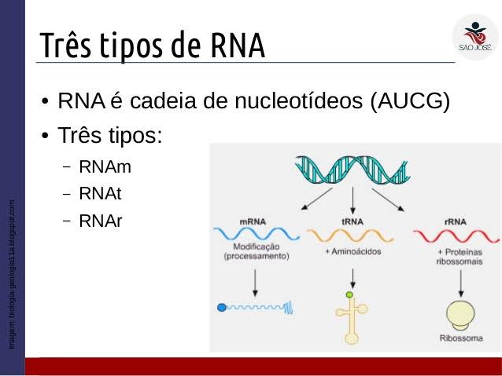
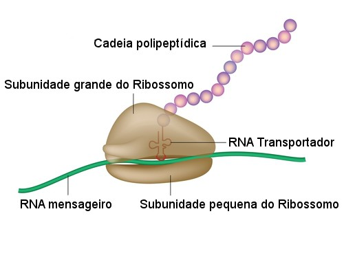
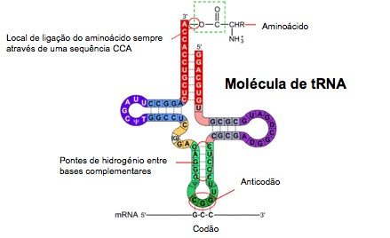
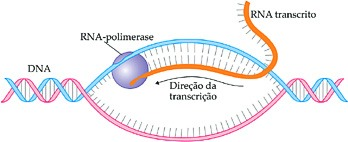

Esse site foi feito como forma de apresentação do trabalho de biologia do Colégio IPMA+.
Neste trabalho você verá um pouco mais a respeito do RNA. Aproveite e participe de nosso quiz, assim testando seu conhecimento
O RNA é um ácido nucleico, (assim como o DNA), formado por vários nucleotídios, unidos por ligação fosfodiéster, essencial em coordenar proteínas, já que ela pode também participar do fluxo de informações genéticas do ser vivo

- As bases nitrogenadas presentes no DNA são citosina, guanina, adenina e timina. já no RNA são encontradas a citosina, guanina, adenina e uracila.
- No RNA o açúcar é a ribose no DNA não.

- O DNA apresenta dupla fita mas o RNA possui uma fita simples.
O RNA (ácido ribonucleico) é uma molécula responsável pela síntese de proteínas das células do corpo. Sua principal função é a produção de
proteínas. Por meio da molécula de DNA, o RNA é produzido no núcleo celular, sendo encontrado também no citoplasma da célula.
Em células eucariotas, o RNA localiza-se no citoplasma (maior quantidade) e no núcleo, onde é sintetizado. A quantidade de RNA é variável de célula para célula e com a atividade celular.
O RNA e formado a partir de um molde (DNA) para a fromaçao de uma fita complementar de RNA , em um processo chamado de transcriçao.
Nesse processo, a enzima fundamental é a RNA polimerase, que realiza a polimerização do RNA a partir do molde de DNA.
A molécula de RNA possui uma estrutura simples, composta por única fita
contendo: ribonucleotídeos formados por uma ribose(açúcar.), um fosfato e demais bases nitrogenadas.

A molécula de RNA é composta por ribonucleotídeos, os quais são formados por uma ribose (açúcar), um fosfato e as bases nitrogenadas.
As bases nitrogenadas são classificadas em:
Adenina (A) e Guanina (G): purinas
Citosina (C) e Uracila (U): pirimidinas

O RNA só possui um lado de uma fita, diferente do DNA que tem duas. Existem 3 tipos de RNA.
RNA ribossômico, RNA transportador, e RNA mensageiro.

O RNA ribossômico, também chamado de ribossomal, é aquele que constitui o ribossomo.
Assim que são sintetizados, os RNAr acumulam-se, formando regiões conhecidas como nucléolos.
Nesses locais, o RNAr combina-se com proteínas e origina os ribossomos.
o RNA mensageiro, (RNAm), e aquele com informações do DNA para reunir as proteínas.

Cada sequência de três bases nitrogenadas, denominada de códons, codifica um aminoácido. Nesse processo e crida a síntese das proteínas
- O RNA transportador é produzido a partir de uma fita do DNA.
- RNA transportador é responsável por transportar os aminoácidos que serão utilizados na formação das proteínas até os ribossomos, onde haverá a síntese das proteínas.

- Os RNA polimerase são enzimas geralmente formadas por muitas cadeias polipeptídicas que catalisam toda transcrição do DNA.

- Nos procariontes existe apenas um tipo de RNA polimerase enquanto nos eucariontes existem três.
O termo ribozima, em si, deriva da combinação das palavras enzima de ácido ribonucleico.
As ribozimas são moléculas de RNA que possuem a capacidade de atuar como catalisadores,ou seja, de diminuir a energia de ativação de uma reação de forma específica.
Tem início com a separação da dupla fita de DNA, porém, apenas uma das fitas serve de molde para sua produção.
• os nucleotídeos utilizados possuem o açúcar ribose no lugar da desoxirribose;
• há a participação de nucleotídeos de uracila no lugar de nucleotídeos de timina.
Assim, se na fita de DNA que está sendo transcrita aparecer adenina, encaminha-se para ela um nucleotídeo complementar contendo uracila;
Em uma célula eucariótica, o RNA
produzido destaca-se de seu molde
e, após passar por um processamento,
atravessa a carioteca e se dirige para o
citoplasma, onde se dará a síntese
protéica. Com o fim da transcrição, as
duas fitas de DNA seu unem
novamente, refazendo-se a dupla hélice.
Retrovírus como Aids e HIV, são formados por RNA.